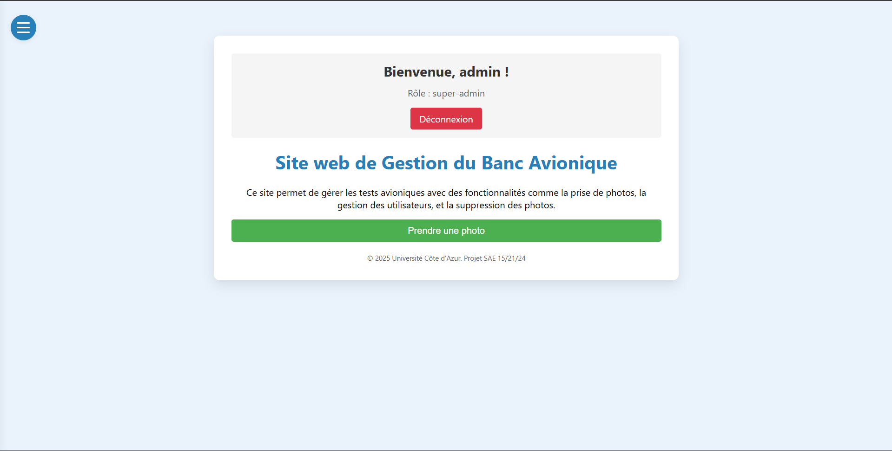

SAÉ 15 / PROJET PERSONNEL
Développement du projet PHOTO_ATB
Contexte
PHOTO_ATB est un projet d’étude réalisé dans le cadre de la SAÉ15. L’objectif est de développer une application complète capable de prendre des photos de bancs avioniques, de les enregistrer dans une base de données sécurisée et de gérer les droits d’accès selon le rôle de l’utilisateur.
Équipe & responsabilités
Nous sommes une équipe de 4 personnes. Je suis responsable de la partie organisation du groupe, de l’électronique (Raspberry Pi + Pico), et de l’intégration backend (base de données, scripts, interface matérielle). Les autres membres s’occupent du site web, de la base de données et du design général.
Compétences mobilisées
- Python (scripts de prise de vue + envoi de données)
- PHP / HTML pour l’interface web utilisateur
- SQL pour stocker les photos, dates et utilisateurs
- Gestion de projet en équipe (répartition, calendrier, documentation)
- Utilisation et configuration d’un Raspberry Pi avec caméra
Avancement
- Base de données en cours de finalisation
- Connexion Raspberry Pi fonctionnelle (prise de photo OK)
- Authentification utilisateur en cours d’intégration
- Tests en environnement local sur bancs simulés
Preuves
- Capture interface en développement : 
- Extrait de code Python (prise de photo) :
from picamera import PiCamera
from time import sleep
camera = PiCamera()
camera.start_preview()
sleep(2)
camera.capture('/home/pi/photo.jpg')
camera.stop_preview()